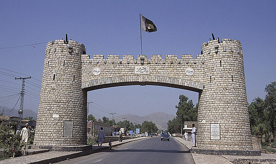

Khyber
Khyber Pakhtunkhwa is one of the four provinces of Pakistan, located in the northwestern region of the country. It was formerly known as North-West Frontier Province (NWFP) and commonly called Sarhad, which in Urdu means "frontier." Its provincial capital and largest city is Peshawar, followed by Mardan. It shares borders with the Federally Administered Tribal Areas to the west; Gilgit–Baltistan to the northeast; Azad Kashmir, Islamabad and Punjab to the east and southeast. Khyber Pakhtunkhwa does not share a border with Balochistan, which lies to its southwest. Khyber Pakhtunkhwa also shares an international border with Afghanistan, connected through the Khyber Pass.

It is also the site of the ancient kingdom Gandhara, the ruins of its capital, Pushkalavati, (modern day Charsadda), and the most prominent center of learning in the Peshawar Valley, Takht-i-Bahi. It has been under the suzerainty of the Persians, Greeks, Mauryans, Kushans, Shahis, Ghaznavids, Mughals, Afghanistan, Sikhs, and British Empire throughout its long history. Khyber Pakhtunkhwa is the third largest province of Pakistan by the size of both population and economy though it is geographically the smallest of four. It comprises 10.5% of Pakistan's economy, and is home to 11.9% of Pakistan's total population, with the majority of the province's inhabitants being Pashtuns, Hazarewal, Chitrali, and Kohistanis.
Since the 9/11 attacks in the United States in 2001, the Khyber Pakhtunkhwa is a major theatre of militancy and terrorism which intensified when the Taliban began an unsuccessful attempt to seize the control of the province in 2004. With the launch of Zarb-e-Azb against the Taliban insurgency, the casualty and crime rates in the country as a whole dropped by 40.0% as compared to 2011–13, with even greater drops noted in Khyber Pakhtunkhwa, despite the province capital being the site of a massacre of schoolchildren on 16 December 2014.
Khyber Pakhtunkhwa means "Khyber side of the land of Pakhtuns" while only the word Pakhtunkhwa means "Land of Pakhtuns" and according to some scholars it means "Pakhtun culture and society". When the British established it as a province, they called it "North West Frontier Province" (abbreviated as NWFP) due to its relative location being in north west of their Indian Empire. After independence of Pakistan, Pakistan continued with this name but a Pakhtun nationalist party, Awami National Party demanded that the province name be changed to "Pakhtunkhwa". Their logic behind that demand was that Punjabi people, Sindhi people and Balochi people have their provinces named after their ethnicities but that is not the case for Pashtun people. Major political parties especially Pakistan Muslim League (N) were against that name since it was too similar to Bacha Khan's demand of separate nation "Pashtunistan". They wanted to name the province something other than which does not carry Pakhtun identity in it as there were other minor ethnicities living in the province especially Hindkowans who spoke Hindko dialect of Punjabi language thus the word Khyber was introduced with the name because it is the name of a major pass which connects Pakistan to Afghanistan.